"Технология деталей радиоэлектронных средств"
для специальности:
1-39 02 02 «Проектирование и производство программно-управляемых электронных средств».
|
Электронный ресурс по учебной дисциплине "Технология деталей радиоэлектронных средств" для специальности: 1-39 02 02 «Проектирование и производство программно-управляемых электронных средств». |
||
| Оглавление | Программа | Теория | Практика | Контроль знаний | Об авторах | ||
Министерство образования Республики Беларусь
Учреждение образования
"Белорусский государственный университет
информатики и радиоэлектроники"
Кафедра электронной техники и технологии
ПРАКТИКУМ
по дисциплинам «Технология обработки материалов»,
«Технология деталей РЭС»,
«Производственные технологии»
для студентов специальностей
«Электронно-оптические системы и технологии»,
«Проектирование и производство РЭС»,
«Экономика и управление на предприятии»
всех форм обучения
Минск 2005
УДК 658.512 (075.8)
ББК 32.88 я 73
П69
Авторы:
А.П. Достанко, Г.М. Шахлевич,
С.В. Бордусов, Е.В. Телеш
Практикум по дисциплинам «Технология обработки материалов»,
«Технология деталей РЭС», «Производственные технологии» для студ. спец.
«Электронно-оптические системы и технологии», «Проектирование и производство
РЭС», «Экономика и управление на предприятии» всех форм обуч./ А.П. Достанко,
Г.М. Шахлевич, С.В. Бордусов, Е.В. Телеш. - Мн.: БГУИР, 2005.- 36 с: ил. ISBN 985-444-677-8
Практикум составлен на основе типовых и рабочих программ соответствующих дисциплин. Им охвачено четыре темы: технологические особенности типов производства; составление плана обработки; определение припусков под обработку; расчет режимов резания и технических норм времени.
Предназначен для
закрепления и углубления теоретических знаний, полученных на лекциях и в
процессе самостоятельного изучения дисциплины, приобретения практических
навыков проектирования технологических процессов, а также для работы по
тематике курсового проектирования.
УДК 658.512 (075.8)
ББК 32.88 я 73
ISBN 985-444-677-8 © Коллектив
авторов, 2005
© БГУИР, 2005
СОДЕРЖАНИЕ
Технологические особенности типов производства
Составление плана
обработки (технологического маршрута)
Расчет припусков
на обработку в поковках тел вращения
Расчет технической
нормы времени
Расчет припусков
на обработку и промежуточных размеров в отливке корпусной детали
Технологические
особенности типов производства
Теоретические сведения
Характер технологического процесса (ТП) во многом зависит от типа
производства, определяющего построение и степень детализации разработки
технологических процессов. Различают: единичное, серийное (мелко- , средне- и
крупносерийное) и массовое производства.
В условиях единичного производства на рабочих местах
обрабатывают различные детали. Технологические операции при этом максимально
концентрированы, выполняются квалифицированными рабочими с применением точного
универсального оборудования.
При серийном производстве изделия выпускаются партиями. На
рабочих местах выполняется несколько периодически повторяющихся операций. Характер
построения ТП зависит от объема выпуска.
При массовом производстве на рабочем месте выполняется одна и та
же операция. Используются высокопроизводительные специальные станки, автоматы,
СТО и точные заготовки. ТП строятся по принципу непрерывного потока. Цикл
изготовления минимальный, себестоимость продукции - наименьшая по сравнению с
другими типами производства.
Тип производства определяется коэффициентом закрепления операций
где - количество операций
ТП, подлежащих выполнению в течение месяца;  - число рабочих мест,
необходимых для их выполнения,
- число рабочих мест,
необходимых для их выполнения,
Здесь N - годовой
объем выпуска; - трудоемкость
изготовления изделия; - норма штучного
времени 1-й операции; - действительный
годовой фонд рабочего времени.
В серийном производстве объем выпуска определяет темп выпуска:
Целесообразно, чтобы длительность операций была равна
или кратна t.
Для массового производства , для крупносерийного , для серийного , для мелкосерийного , для единичного и не
регламентируется.
До разработки ТП реальное значение неизвестно. При
определении типа производства учитывают либо заданную (плановую) трудоемкость,
либо ориентировочную, оцененную на начальных стадиях проектирования ТП [1].
Тогда
где - средняя норма
штучного времени ( определяющей операции данного ТП).
Пример 1
Сборку изделия выполняют за 7 технологических операций, общая трудоемкость
которых 9,88 мин. Объем выпуска изделий N = 60000 шт. в год. Определить тип
производства.
Решение
При односменной работе и коэффициенте выполнения нормы к = 1 необходимое
число рабочих мест:
При производство
крупносерийное.
Пример 2
Деталь изготавливают штамповкой за одну операцию. Норма штучного
времени Тшт= 0,2 мин. Определить тип производства при объеме
выпуска N = 50000 шт. в год.
Решение
Такт выпуска деталей при односменной работе
При - производство
среднесерийное.
Пример 3
Колодка разъема изготавливается из термопласта А1-4в.
Объем выпуска N = 60000 шт. в год. Максимальный
линейный размер детали . Определить тип производства при односменной работе.
Решение
Наиболее экономичный способ изготовления изделий из АГ-4В -
литьвое прессование в стационарных многогнездных пресс-формах без арматуры.
Предположим, что используется 6-гнездная пресс-форма. Такт выпуска деталей
Норма штучного времени на операции прессования
где - основное
технологическое время, равное выдержке материала в пресс-форме.
Из технологических справочников (см., например: Справочник конструктора-приборостроителя.
Проектирование. Основные нормы/ Под ред. В.Л. Соломахо.- Мн.: Выш. шк., 1988.-
272 с.) для термопласта АГ-4в берем выдержку 1 мин на
- вспомогательное
время (загрузка загрузочной камеры пресс-материалом, включение и выключение
давления, удаление детали, очистка пресс-формы, удаление литника и др.), а - время
организационного обслуживание рабочего места.
Из нормативно-технической документации:
; .
При - производство
массовое.
Задачи для аудиторных и домашних занятий
Определить тип производства для вариантов технологических процессов,
приведенных в табл. 1.1.
Таблица 1.1
|
№ варианта ТП |
Объем выпуска, тыс. шт. в год |
Трудоемкость изготовления, мин |
Кол-во операций в ТП |
Число смен |
Коэф-т выполнения нормы |
Тшт, мин |
|
1 |
2 |
3 |
4 |
5 |
6 |
7 |
|
1 |
30 |
- |
- |
1 |
1 |
0,3 |
|
2 |
500 |
250 |
150 |
1 |
1 |
- |
|
3 |
0,2 |
- |
- |
1 |
1 |
1,5 |
|
4 |
1500 |
- |
- |
1 |
0,95 |
2,0 |
|
5 |
12 |
- |
- |
1 |
0,95 |
0,5 |
|
6 |
1000 |
120 |
17 |
2 |
0,95 |
- |
|
7 |
0,8 |
35 |
54 |
2 |
1,05 |
- |
|
8 |
1,2 |
40 |
80 |
2 |
1,05 |
- |
|
9 |
500 |
180 |
12 |
2 |
1 |
- |
|
10 |
5 |
3000 |
14 |
2 |
0,95 |
- |
|
11 |
1000 |
3600 |
22 |
3 |
1 |
- |
|
12 |
5 |
3600 |
23 |
3 |
1 |
- |
Составление плана обработки (технологического
маршрута)
Теоретические сведения
Конструкция детали в значительной степени определяет
структуру ТП. На построение ТП влияют форма, размеры и материал детали,
требуемая точность размеров, качество поверхности, термообработка, вид
заготовки, объем выпуска, реальные условия производства. В табл..2.1 отражена
связь этих характеристик с технологическими факторами [2, 6].
Таблица 2.1
Связь конструкторско-технологических характеристик
детали с факторами ТП
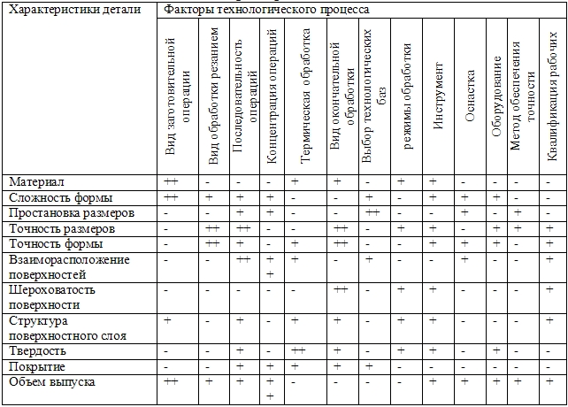
Примечание:
«+ +» - характеристика оказывает сильное влияние на
параметр ТП;
«+» - влияние имеется; «-» - влияние отсутствует или
слабое.
Вначале по чертежу детали определяем поверхности, которые нельзя лучить
на заготовке без последующей обработки, Обычно точность их размеров выше
12-11-го квалитетов, а шероховатость . Обработке могут подвергаться и менее точные поверхности,
если их технологические свойства не удовлетворяют требованиям чертежа. При
анализе конструкции особое внимание уделяется размерам, допускам формы и
расположения поверхностей точных квалитетов, малых шероховатостей, особым
свойствам детали.
Разработка ТП облегчается, если можно подобрать типовой или групповой
ТП. Для этого необходимо разработать конструкторско-технологический код детали
и ввести деталь в группу, для которой имеется унифицированный ТП [1]. В
серийном и массовом производстве желательно использовать заготовочные операции
получения точных заготовок, хотя для этого имеются и ограничения: сложность
оборудования, пористость отливок, высокая стоимость и сложность пресс-форм и штампов
и др.
Планирование начинают с выбора последней операции, обеспечивающей
заданные чертежом детали точность и шероховатость. С учетом формы обрабатываемой
поверхности с помощью справочных материалов назначают для нее вид окончательной
обработки. Обычно имеется несколько равнозначных по технологическому критерию
вариантов. Поэтому окончательный выбор метода производят с учетом возможности
выполнения других требований чертежа и экономических критериев.
Предпочтительной является операция, однотипная с предыдущей, поскольку это
позволяет использовать те же станки, приспособления и инструменты.
Первыми обрабатываются базовые поверхности. Операции, на которых
наиболее вероятно появление брака, следует выполнять в начале обработки.
Отверстия, пазы, шлицы, фаски и т.п., если они не используются в качестве
базовых, обрабатываются в конце ТП.
План операций обработки оформляется в виде таблицы (табл. 2.2).
Таблица 2.2
План операций обработки поверхностей детали
|
№ и вид поверхности |
Наименование
операции |
Базовые поверхности |
Операционный размер |
Шероховатость
поверхности |
Оборудование, СТО,
инструмент |
|
|
|
|
|
|
|
Пример 1
Составить план обработки детали (движок) (рис.2.1).
Материал - алюминиевый сплав Д16Т, производство серийное.
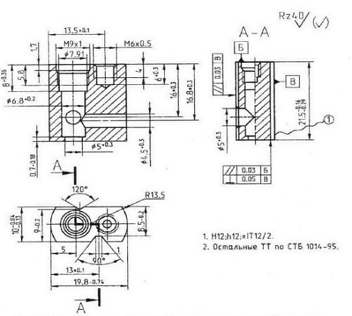
Рис.2.1. Чертеж детали (движок) с техническими
требованиями
Решение
1. Анализ технического задания
Движок представляет собой прямоугольную призму с двумя закругленными
противоположными гранями. Деталь имеет 3 связанных отверстия с взаимно
перпендикулярными осями. Одно из них — многоступенчатое с резьбовой ступенью.
Имеется также глухое отверстие и два паза на плоских гранях. К точности
размеров (11-й квалитет), отклонению формы и шероховатости поверхностей () высоких требований не предъявляется.
Материал детали (алюминиевый сплав D16Т) технологичен к обработке давлением и резанием.
Его сортамент достаточно широк.
2. Выбор метода получения заготовки
Для детали с указанными параметрами в серийном производстве в качестве
заготовки целесообразно выбрать пруток, сечение которого соответствовало бы ее
профилю. Из сортового прутка прямоугольного сечения штамповкой получают
требуемого сечения для нескольких деталей. Длину загтовки и рассчитывают с
учетом допустимого коэффициента вытяжки металла [3, 4]. Затем заготовку
разрезают на части длиной, соответствующей длине детали с припусками под
обработку. Обрабатывают наружный контур для обеспечения требуемого положения
поверхностей, фрезеруют пазы и обрабатывают отверстия.
3. Технологический маршрут
1. Резка прутка из сортового
проката сечением 10x20 мм на заготовки. В предположении, что из заготовки будет
изготавливаться 5 деталей, и равенства объемов заготовок на данной операции и
операции холодного выдавливания рассчитывается длина исходной заготовки:
где и - длина и площадь
поперечного сечения исходного прутка; и - то же для групповой заготовки
требуемого профиля.
где - длина детали,
припуск под фрезерование торцов, ширина реза при разделении прутка на
индивидуальные заготовки.
Из расчетов и справочных данных: ,
тогда (схема обработки на
рис. 2.2, а).
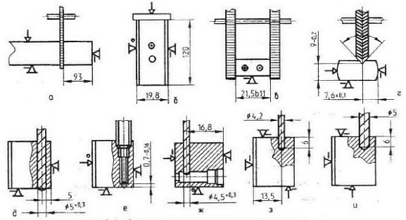
Рис.2.2. Схема технологического маршрута
2. Сплав D16Т поставляется в упрочненном
состоянии, для повышения его технологичности к обработке давлением проводим
термообработку прутка (рекристаллизационный отжиг на пластичность при
температуре 250-280°С в течение 3-5 ч).
3. Холодное объемное выдавливание профиля детали длиной
4. Резка профиля на 5 заготовок
в размер ( - припуск под
5. Фрезерование торцов дисковой фрезой в размер 21,5 в 11-й квалитет
(рис.2.2,в).
6. Фрезерование паза с
углом 120° профильной
дисковой фрезой (рис. 2.2,г).
7. Фрезерование паза с углом 90° (то же).
8. Сверление отверстия Ø 5+0,3 мм(рис.2.2,д).
9. Сверление отверстий Ø 6,8; Ø 7,91 и Ø
10. Сверление отверстия Ø 4.5+0,3 мм (рис.2.2,ж).
11. Сверление отверстия Ø
12. Зенкерование отверстия Ø
13. Нарезание резьбы М6 х 0,5 в
три прохода на резьбонарезном станке РН-220 метчиками.
14. Нарезание резьбы М9 х 1 (то же).
При составлении плана обработки следует обратить внимание на требования
к расположению поверхностей и выполнению размеров (высота и ширина детали).
Ширина детали мм и требуемая параллельность торцов с пазами обеспечивается
конструкцией штампа и расположением формообразующих поверхностей.
Перпендикулярность торцов и размер мм — на операции фрезерования за счет ориентации заготовки
относительно инструмента и точностью приспособления.
В план обработки необходимо включать контрольные операции,
особенно наиболее точных размеров, взаимное положение поверхностей,
несоосность отверстий, а также диаметров резьбы и соответствующих отверстий.
Контрольные операции включаются в маршрут после выполнения соответствующих размеров
или в конце ТП.
Пример 2
Для детали «корпус разъема», чертеж которой с техническими требованиями
представлен на рис.2.3, составить два варианта плана обработки с различными исходными заготовками
(сортовой прокат 12-го квалитета точности и точная отливка, полученная по выплавляемым моделям) для одного и
того же объема выпуска. Материал
- силумин АЛ2. Провести сравнительный анализ вариантов ТП и необходимому
оборудованию.
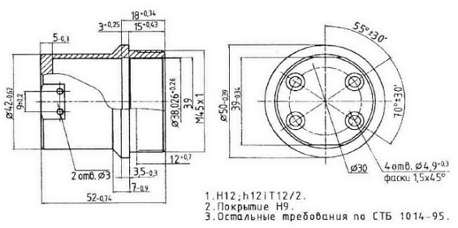
Рис.2.3. Корпус разъема
Расчет припусков на обработку в поковках тел вращения
Пример 1
Расчетно-аналитическим методом определить припуск на обработку
поверхности Ø40С4 (-0,17) (рис.3.1).
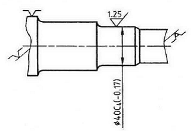
Рис.3.1. Фрагмент чертежа цапфы правой
Исходные данные к расчету:
- заготовка - штамповка на КГШП 1 -го кл. точности по ГОСТ 7505-74;
- материал — сталь 40;
- степень сложности — СЛ;
- масса штамповки —
- способ установки — в центрах.
Технологический маршрут обработки поверхности:
- точение черновое;
- точение чистовое;
- шлифование круглое.
Решение
Из литературных источников [2,3] определяем параметры шероховатости и глубины
нарушенного слоя Т для штампованных заготовок массой до 2,5 кг: , Т = 200 мкм. Суммарное значение пространственных отклонений
для заготовки определяется по формуле
где коробление ( - удельная кривизна заготовки равна 0,8 мкм/мм).
Согласно нормативным данным [1] смещение , а увод центра
где - допуск диаметральный
размер базовой поверхности заготовки при зацентровке .
Погрешность базирования при обработке в центрах с вращающимся передним
центром равна нулю, т.е. .
Определим остаточную пространственную погрешность после механических
обработок. После чернового точения она составит
после чистового точения
после шлифования
Значения 2·Zmin по операциям составят:
черновое точение
чистовое точение
шлифование
Расчетные размеры по операциям механической обработки:
шлифование - 40 - 0,17 =
точение чистовое -
39,83 + 0,174 =
точение черновое -
40,004 + 0,28 =
заготовка - 40,284 + 1,040 =
Определяем по таблице [4, 5] для каждой операции значения допусков в
соответствии с квалитетом точности. Суммируя наименьшие значения размеров по
операциям с соответствующими значениями допусков, получаем наибольшие значения
размеров:
шлифование - 39,83
+ 0,035 =
точение чистовое - 40,004 +
0,17 =
точение черновое - 40,284 +
1,8 =
заготовка - 41,324 + 1,8 =
Предельное значение припуска:
шлифование - Zmin = 40,004 – 39,83 =
- Zmax = 40,174 – 39,865 =
точение чистовое - Zmin = 40,284 – 40,004 =
- Zmax = 40,744 – 40,174 =
точение черновое - Zmin = 41,324 – 40,284 =
- Zmax = 43,124 – 40,744 =
Значения припусков:
Z0 min =
1.04 + 0,28 + 0,174 =
Z0 max =
2,38 + 0,57 +
Проверим правильность расчетов:
3,259 – 1,494 =
1,8 – 0,035 =
Номинальный припуск составит:
Z0 ном = Z0 min +
НЗ – НД = 1,494 + 0,6 – 0,17 =
где НЗ – НД
– соответственно нижний допуск на заготовку и деталь.
Результаты расчетов сводим в табл.3.1. На их основании построим схему
графического расположения припусков и допусков (рис.3.2).
Таблица 3.1
Расчет припусков и предельных размеров по
технологическим переходам
|
Технологический
переход обработки |
Элемент припуска |
2 Zmin, мкм |
Расчетный размер, мм |
Допуск δ, мм |
Предельные размеры,
мм |
Предельное значение Z, мм |
|||||
|
Rz |
T |
ρ |
ε |
dmax |
dmin |
Zmax |
Zmin |
||||
|
Заготовка |
150 |
200 |
670 |
- |
|
41,324 |
1,8 |
43,124 |
41,324 |
|
|
|
Точение черновое |
50 |
50 |
40 |
- |
2·1020 |
40,284 |
0,46 |
40,744 |
40,284 |
2,38 |
1,04 |
|
Точение чистовое |
30 |
30 |
27 |
|
2·140 |
40,004 |
0,17 |
40,174 |
40,004 |
0,57 |
0,28 |
|
Шлифование |
10 |
20 |
13 |
|
2·87 |
39,83 |
0,035 |
39,865 |
39,83 |
0,309 |
0,174 |
|
Итого |
|
|
|
|
2·1247 |
|
|
|
|
3,259 |
1,494 |
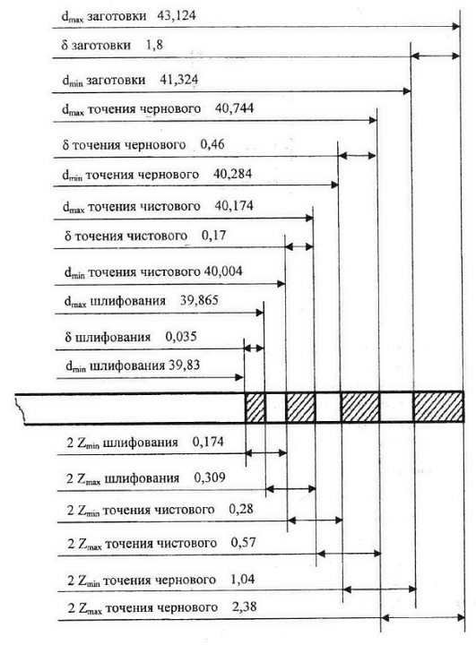
Рис. 3.2. Схема расположения припусков и допусков, мм,
на обработку поверхности Ø4ОС4(-0,17) цапфы правой
Пример 2
Рассчитать припуски на обработку и промежуточные предельные размеры для
диаметра 50+0,027 (рис.3.3).
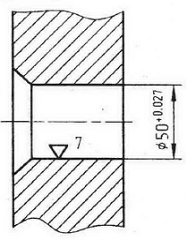
Рис.3.3. Фрагмент детали с обрабатываемым отверстием
Исходные данные к расчету:
- заготовка получена горячей штамповкой,
имеет 2-ю гр. точности;
- вес до
- годовая программа выпуска —
100 тыс. шт.
Технологический маршрут обработки поверхности:
- черновое зенкерование;
- получистовое зенкерование;
- черновое развертывание;
- чистовое развертывание.
Решение
Из [3] находим величины Rz и
Т, характеризующие качество поверхности штампованной заготовки. Rz = 150 мкм, Т = 250 мкм. Для чернового зенкерования: Rz = 50 мкм, Т = 50 мкм; чистового зенкерования: Rz = 40 мкм, Т = 40 мкм; чернового развертывания: Rz= 5 мкм, Т = 10 мкм.
Сумма пространственных отклонений для заготовки данного типа определяется
по формуле
, эксцентриситет [1]. Следовательно
Определим остаточную пространственную погрешность после механиче-их
обработок. После чернового зенкерования
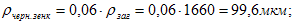
после получистого зенкерования
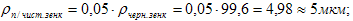
после чернового развертывания
где 0,06; 0,05 и 0,04 - величины коэффициентов уточнения.
Погрешность установки ε в нашем случае будет определяться только
погрешностью закрепления, так как погрешность базирования в трехкулачковом
самоцентрирующемся патроне равна 0. Тогда, согласно [5],
Для второго технологического перехода величина погрешности установки
определяется по формуле
где - погрешность
индексации поворотного устройства (в предположении,
что обработка отверстия производится на многошпиндельном станке).
Для третьего перехода погрешность установки принята равной только погрешности
индексации, т.е.
Проводим расчет минимальных значений межоперационных припусков и
записываем их в графу 6 табл.3.2. Минимальный припуск под черновое зенкерование
будет
под получистовое зенкерование
под черновое развертывание
под чистовое развертывание
Графа 7 "Расчетный размер" заполняется, начиная с конечного
(в данном случае чертежного) размера,
последовательным вычитанием расчетного минимального припуска каждого
технологического перехода. То есть, имея расчетный (чертежный) размер
последнего перехода (в данном случае чистового развертывания 50,027), для
остальных переходов получим:
для чернового развертывания
50,027 - 0,038 =
для получистового зенкерования
49,989 - 0,24 =
для чернового зенкерования
49,749 - 0,462 =
для заготовки
49,287 - 4,32 =
Значение допусков каждого перехода (графа 8) принимается по таблицам
[1] в соответствии с классом точности того или иного вида обработки.
Так, для чистового развертывания значение допуска составляет 27 мкм (чертежный
размер); для чернового развертывания δ = 39 мкм; для получистого
зенкерования δ = 170 мкм; для чернового зенкерования δ = 300 мкм.
Допуск штамповки на отверстие рассчитывается по формуле
где - величина
недоштамповки; - износ штампа; - колебание усадки, равное 1,0 мкм/мм.
Таблица 3.2
Расчет припусков на обработку отверстия 50+0,027
и предельных размеров по технологическим переходам
|
Технологический
переход обработки |
Элемент припуска |
Zmin, мкм |
Расчетный размер, мм |
Допуск δ, мм |
Предельные размер, мм |
Предельное значение
припусков, мм |
|||||
|
Rz |
T |
ρ |
ε |
наименьший |
наибольший |
наименьший |
наибольший |
||||
|
Размеры заготовки |
150 |
250 |
1660 |
|
|
44,967 |
2750 |
42,15 |
44,9 |
- |
- |
|
Черновое зенкерование |
50 |
50 |
100 |
580 |
2·2160 |
49,287 |
300 |
49,0 |
49,3 |
4400 |
6850 |
|
Получистое
зенкерование |
30 |
40 |
5 |
85 |
2·231 |
49,749 |
170 |
49,58 |
49,75 |
450 |
580 |
|
Чистовое зенкерование |
5 |
10 |
4 |
50 |
2·120 |
49,989 |
39 |
49,95 |
49,989 |
239 |
370 |
|
Чистое развертывание |
- |
- |
- |
- |
2·19 |
50,027 |
27 |
50 |
50,027 |
38 |
50 |
Для нашей детали находим ; ; .
Тогда
.
При этом верхнее отклонение
и нижнее отклонение
Графа 10 "Наибольший предельный размер" заполняется по расчетным
размерам, округленным до точности допуска соответствующего перехода. Наименьшие предельные размеры
(графа 9) получаются вычитанием из наибольших предельных размеров допусков
соответствующих переходов. Таким образом:
для чистового развертывания наибольший предельный размер 50,027,
наименьший 50,027 - 0,027 =
для чернового развертывания наибольший предельный размер
для получистового зенкерования наибольший
предельный размер
для чернового зенкерования наибольший предельный размер
для заготовки наибольший предельный размер
Минимальные значения припуска 2Zmin (графа 11) равны разности наибольших предельных
размеров выполняемого и предшествующего переходов, а максимальные значения 2Zmax (графа 12) - соответственно разности наименьших
предельных размеров. Следовательно, для чистового развертывания
для чернового развертывания
для полу чистового зенкерования
для чернового зенкерования
Определяем общие припуски, суммируя промежуточные
Делаем проверку правильности произведенных расчетов путем сопоставления
разности припусков и допусков , при этом разность промежуточных припусков должна быть равна
разности допусков на промежуточные размеры, т.е.
Аналогично разность общих припусков должна равняться разности допусков
на размеры черной заготовки и готовой детали:
Результаты проверки занесем в табл.3.3.
Таблица 3.3
Проверка расчетов
|
Технологические операции |
Для промежуточных переходов |
|
|
|
Разность припусков, мкм |
Разность допусков, мкм |
|
Черновое зенкерование |
6850-4400=2450 |
2750-300=2450 |
|
Получистовое зенкерование |
580-450=130 |
300-170=130 |
|
Черновое развертывание |
370-239=131 |
170-39=131 |
|
Чистовое развертывание |
50-38=12 |
39-27=12 |
|
Общие |
7850-5127=2723 |
2750-27=2723 |
Данные табл. 3.3 говорят о правильности расчетов. На основании данных
расчета припусков (см. табл. 3.2) строим схему расположения припусков и
допусков на обработку отверстия Ø50+0,027.
Расчет режимов резания будем проводить по справочным таблицам [4,9].
Пример 1
Рассчитаем режимы фрезерования торцов заготовки на
фрезерно-центровальном полуавтомате барабанного типа МР-76АМ. Мощность полуавтомата
12,8 кВт, КПД = 0,85.
Операция 010: фрезерование торцов цапфы в размер 195±
Решение
Рассчитаем длину рабочего хода:
Ширина фрезерования составит
По [8, карта Ф-2] определяем рекомендуемую подачу на зуб (с учетом того,
что глубина резания равна 1,5 мкм) Sz= 0,15 мм/зуб.
По [8, карта Ф-3] определяем период стойкости фрезы Тр= 120
мин.
По [8, карта Ф-4] определяем скорость резания V = 240 м/мин. Число оборотов шпинделя . Уточняем n по паспорту
станка: n = 750 об/мин. Уточняем скорость резания по принятым
скоростям шпинделя:
Рассчитаем минутную подачу по принятому значению числа оборотов
шпинделя
Уточняем расчетную SM по
паспорту станка: SM = 1100 мм/мин.
Рассчитаем основное машинное время обработки:
уточняем подачу на 345:
По карте Ф-5 определяем необходимую мощность резания:
Проверим расчеты по мощности:
т.е. мощность станка
достаточна для проведения данной операции.
Пример 2
Рассчитать режимы резания при многоинструментальной обработке на
токарном полуавтомате.
При проектировании операций с совмещением во времени технологических
переходов (параллельные схемы обработки) необходимо выявить лимитирующий
технологический переход и сопоставить время его выполнения с допустимой
величиной в принятом такте выпуска. Одноместная многоинструментальная
обработка выполняется при общей частоте вращения шпинделя и общей для всех
резцов минутной подачей.
Исходные данные: схема многоинструментальной наладки (рис.4.1).
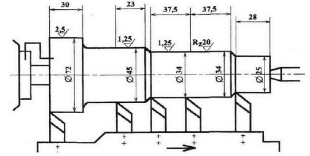
Рис. 4.1. Схема инструментальной наладки
Мощность станка — 22 кВт, КПД = 0,75 инструмент — резцы проходные из
твердого сплава Т15К6, обрабатываемый материал – сталь 40, НВ 187…217, глубина
резания tmax
=
Решение
Определим длину рабочего хода суппорта, равную максимальной из длин для
каждого инструмента в наладке:
Следовательно, .
По [8, карта Т-2] назначаем подачу на оборот шпинделя So = 0,5 мм/об что соответствует паспортным данным
станка.
Определяем стойкость для предположительно лимитирующих инструментов Тр:
. По [7, табл. 2.5] .
; ;
; .
По [8, карта Т-4] определим скорость резания:
;
; ;
Рассчитаем число оборотов шпинделя (с учетом максимального обрабатываемого
диаметра Ø 72):
Это число соответствует паспортным данным станка. Определим основное
машинное время:
Машинное время оказалось меньше такта выпуска tB. По [8, карта Т-5] определим силу резания:
; ;
; ;
Рассчитаем мощность резания:
Проверим расчет по мощности:
т.е. мощности станка
вполне достаточно для проведения операции.
Расчет технической нормы времени
Теоретические сведения
Задачей нормирования является определение штучно-калькуляционного
времени Тшт.-к. Для этого необходимо предварительно определить
размер партии запускаемых в производство деталей. Определяем по упрощенной
формуле, приведенной в [2]:
где N — годовая программа выпуска; а — периодичность запуска,
дней; F - число рабочих дней в году, F = 253.
Периодичность запуска возьмем равной 3 дням. Штучно-калькуляционное
время определяется по формуле
Пример 1
Рассчитаем Тшт.-к для операций токарной
многоинструментальной обработки и фрезерования торцов.
Операция 010
Фрезерно-центровальный полуавтомат МР-76АМ.
Основное машинное время 0,072 мин.
Масса детали
Режущий инструмент — торцовая фреза (2 шт.) и центровочное сверло (2
шт.), измерительный — шаблон и штангенциркуль.
Стойкость фрезы 120 мин.
Решение
Расчет будем вести по нормативам [5].
Подсчитаем вспомогательное время, затраченное на следующие операции.
взять деталь, установить и закрепить, открепить ее, снять и отложить
Туст = 0,032 + 0,013 + 0,030 + 0,030 +
0,013 + +0,026 = 0,114 мин
включить станок кнопкой – Тупр = 0,015 мин;
промерить деталь шаблоном – Тпз = 0,013 мин. Коэффициент
периодичности промеров 0,3. Тогда
Тпз = 0,013 · 0,3 = 0,039 мин ≈ 0,004
мин.
Вспомогательное время равно
Тв=Туст + Тупр + Тпз
=0,144 + 0,015 + 0,004 = 0,163 мин.
Оперативное время
Топ =То +Тв =0,072 +
0,163 = 0,235 мин.
Время на техническое обслуживание рабочего места
где Тсм = 2 · 2 = 4 мин - время на смену двух фрез.
Время на организационное обслуживание рабочего места
Торг = 0,235 · 2,4/100 = 0,0056 мин.
Время перерывов на отдых
Тотд = 0,235 · 4/100 = 0,0094 мин.
По нормативам, приведенным в [10], подготовительно-заключительное время
составляет 9,5 мин. Тогда
Операция 020
Токарный полуавтомат 1713.
Основное машинное время 0,225 мин.
Масса детали
Режущий элемент — резцы проходные (5 шт.) стойкостью Тр =133
мин.
Измерительный инструмент — скоба (4 шт.).
Расчет ведем аналогично предыдущей операции.
Время на установку, закрепление, открепление, снятие и перенос детали
Туст = 0,032 + 0,015 + 0,034 + 0,034 +
0,015 + 0,030 = 0,16 мин.
Время, необходимое для измерения скобой диаметра,
Тизм = 0,09 · 0,3 · 4 = 0,108 мин.
Время для включения станка кнопкой
Тупр = 0,0015 мин.
Определяем вспомогательное время:
Тв = 0,16 + 0,108 + 0,015 = 0,283 мин,
оперативное:
Топ = 0,225 + 0,283 = 0,508 мин.
Время на техническое обслуживание рабочего места:
Ттех = 0,225 · 12,5/133 = 0,021 мин.
Тсм = 2,5 · 5 = 12,5 мин— время на смену пяти резцов.
Время на организационное обслуживание составляет 1,7% от Топ,
т.е.
Торг =0,508 · 1,7/100 = 0,0086 мин.
Время на отдых составляет 6% от Топ:
Тотд = 0,508 · 6/100 = 0,03 мин.
По нормативам Тп-з составляет 14,3 мин. Тогда
Расчет припусков на обработку и промежуточных размеров
в отливке корпусной детали
Пример 1
Расчетно-аналитическим методом рассчитать припуски на обработку и
промежуточные предельные размеры для диаметра 52+
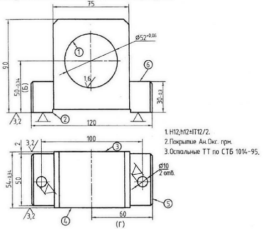
Рис. 6.1. Корпус подшипника: чертеж и схема установки при
обработке
отверстия 052+
Решение
Технологический маршрут обработки отверстия состоит из двух операций:
чернового и чистового растачивания, выполняемых при одной установке
обрабатываемой детали. Заготовка базируется на поверхности 2 и двух обработанных ранее отверстиях Ø10Н6. Расчет припусков на обработку отверстия Ø 52+
Суммарное значение Rz и h, характеризующее качество литых заготовок, составляет
600 мкм [2, табл.4.25]. После первого технологического перехода глубина
нарушенного слоя h для деталей из чугуна
исключается из расчетов поэтому для чернового и чистового растачивания находят
[2, табл.4.27] только значения Rz -
соответственно 50 и 20 мкм и записывают их в расчетную таблицу. Суммарное
пространственное отклонение для заготовки данного типа определяется по формуле
Коробление отверстия следует учитывать как в диаметральном, так и в осевом
его сечении. Поэтому
где d, l - диаметр и длина обрабатываемого отверстия. Значения
удельного коробления ΔК для отливок находят по [2, табл.4.29].
При определении ρсм в данном случае следует принимать
во внимание точность расположения базовых поверхностей, используемых в принятой
схеме установки, относительно обрабатываемой в этой установке поверхности. Так,
если бы для получения размера 50-
Таким же образом определяется погрешность размера
Полное смещение отверстия в отливке относительно наружной ее поверхности
представляет геометрическую сумму смещений в двух взаимно перпендикулярных плоскостях:
где , - допуски на размеры Б
и Г по первому классу точности. Суммарное пространственное отклонение заготовки
Остаточное пространственное отклонение после чернового растачивания
Погрешность установки при черновом растачивании
Погрешность базирования в рассматриваемом случае возникает за счет перекоса
заготовки в горизонтальной плоскости при установке ее на штыри приспособления
из-за наличия зазоров между отверстиями и штырями. Наибольший зазор
где - допуск диаметра
отверстия 01ОЯ6 (5А=
Наибольший угол поворота заготовки на штырях можно определить из
соотношения
Погрешность базирования заготовки на длине обрабатываемого отверстия
Погрешность закрепления заготовки εз [2, табл.4.37]
принимаем 120 мкм. Тогда погрешность ее установки при черновом растачивании
Остаточная погрешность установки заготовки при чистовом растачивании
Минимальное значение межоперационного припуска
Минимальный припуск под растачивание: черновое
чистовое
Результаты расчетов сводим в табл.6.1.
Таблица 6.1
Припуски и предельные размеры по технологическим
переходам на обработку отверстия Ø 52+0,06 в корпусе (см. рис.6.1)
|
Технологический
переход обработки |
Элемент припуска,
мкм |
2 Zmin, мкм |
Расчетный размер dp, мм |
Допуск δ, мм |
Предельные размеры,
мм |
Предельное значение
, мм |
|||||
|
Rz |
h |
ρ |
ε |
dmin |
Dmax |
2zmin |
2zmax |
||||
|
Литье |
- |
600 |
363 |
- |
- |
49,956 |
600 |
49.36 |
49.96 |
- |
- |
|
Растачивание
черновое |
50 |
- |
18 |
122 |
2·983 |
51,922 |
200 |
51,72 |
51,92 |
1,96 |
2,36 |
|
Растачивание
чистовое |
- |
- |
- |
6 |
2·69 |
52,06 |
60 |
52,0 |
52,06 |
0,14 |
0,28 |
Графа «Расчетный размер» заполняется, начиная с конечного, в данном
случае чертежного размера, последовательным вычитанием расчетного минимального
припуска на каждом технологическом переходе:
для чернового растачивания dP1 = 52,06
- 0,138 =
для литья dp2 = 51,922 - 1,96 =
Допуски на каждом переходе принимаются по таблицам [3-6], а также по
квалитетам, приведенным в [2, прил.6], в соответствии с точностью обработки на
рассматриваемом переходе:
для чистового растачивания - δ = 60 мкм;
для чернового - δ = 200 мкм;
для литья (отливка 1-го кл. точности по ГОСТ 1855-56) - δ = 600
мкм.
В графе «Предельный размер» наибольшие значения dmax получаются путем округления расчетных размеров до
точности допуска на соответствующем переходе, наименьшие dmin - путем вычитания допусков из наибольших предельных
размеров. Минимальные предельные значения припусков 2zmin представляют собой разность наибольших предельных
размеров на выполняемом и предшествующем переходах, а максимальные 2zmax- соответственно разность наименьших предельных
размеров.
Обшие припуски z0 min и z0 max определяют, суммируя промежуточные, и записывают их
значения под соответствующими графами:
z0 min = 1,96 + 0,14
=
z0 max = 2,36 + 0,28 =
Рассчитывают общий номинальный припуск и номинальный диаметр заготовки:
z0 ном
= z0 min + Вз – Вд = 2,1 + 0,3 - 0,06 =
d3 ном = zд ном
- z0 ном
= 52 + 2,34 =
Проверяют правильность выполнения расчетов:
В завершение расчета строят схему расположения припусков и допусков на
обработку отверстия Ø 52+0,06 мм и промежуточных размеров (рис.6.2).
На остальные обрабатываемые поверхности корпуса назначают припуски и
допуски табличным методом по ГОСТ 1855-55. Расчетные и табличные значения
припусков записывают в табл.6.2.
Таблица 6.2
Припуски и допуски на обрабатываемые поверхности
корпуса (см. рис.6.1)
|
Поверхность |
Размер, мм |
Припуск, мм |
Допуск, мм |
|
|
табличный |
расчетный |
|||
|
1 |
Ø 52-0,06 |
2·2,0 |
2·1,17 |
±0,3 |
|
2 |
30-0,3 |
2 |
|
±0,2 |
|
3 |
54-0,34 |
2 |
|
±0,2 |
|
4 |
54-0,34 |
2 |
|
±0,2 |
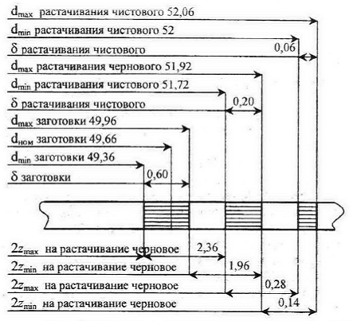
Рис. 6.2. Схема расположения припусков и допусков на
обработку отверстий корпуса подшипника
Литература
1. Вейцман Э.В., Венбрин В.Д. Технологическая
подготовка производства РЭА.-М.: Радио и связь, 1989.- 128 с.
2. Проектирование технологических процессов механической обработки в
машиностроении: Учеб. пособие/ Под ред. В.В.Бабука.-Мн.: Выш. шк., 1987.- 255
с.
3. Машиностроение. Энциклопедия. Т.Ш-2: Технология заготовительных
производств / Под общ. ред. В.Ф.Мануйлова.- М.: Машиностроение, 1996.- 736 с.
4. Машиностроение. Энциклопедия. Т. Ш-3: Технология изготовления деталей машин / Под ред. А.Г.Суслова.-
М.: Машиностроение, 2000.- 840 с.
5. Справочник технолога-машиностроителя. В 2 т. / Под ред.
А.Г.Косиловой, Р.К.Мещерякова.- М.: Машиностроение, 2001.- 912 с., 944 с.
6 Косилова А. Г., Мещеряков Р.К., Калинин М.А. Точность
обработки, заготовки и припуски в машиностроении.- М.: Машиностроение, 1976.
7 Технология обработки
материалов: Метод, пособие по курсовому проектированию В 2 ч. 4.1: Выбор
инструмента и назначение режимов резания / Г М Шахлевич и др.- Мн.: БГУИР,
2001.- 47 с.
8. Режимы резания металлов: Справочник / Под ред. Ю.В.Барановского, М:
Машиностроение, 1972.- 407 с.
9. Общемашиностроительные нормативы режимов резания для технического
нормирования работ на металлорежущих станках. Ч.1.- М.: Машиностроение, 1984.-
416 с.
10. Общемашиностроительные нормативы вспомогательного времени и времени
на обслуживание рабочего места, на работы, выполняемые на металлорежущих
станках, М.: Экономика, 1988.- 217 с.
| (С) БГУИР |